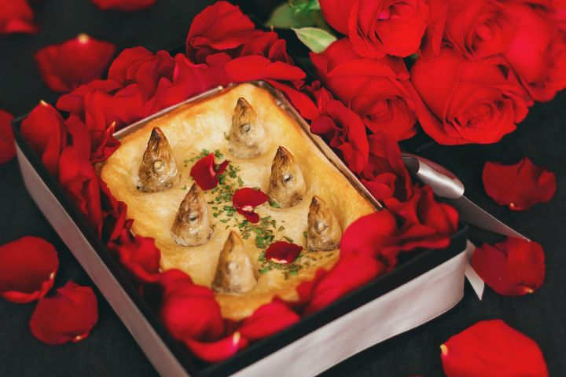

派，或称西式馅饼，是一种烤焗食品，由饼皮包着馅料；馅料可以是各类型的食品，例如肉类、蔬菜、水果及蛋酱等，主要按馅料分为咸馅饼和甜馅饼两大类。
派不一定为甜品，也可以作为主食，但绝大多数的派都是以甜食为材料制作。
派可能是起源于欧洲的一种食品，时期甚至可追溯到公元前。不过它至今已成了一种典型的美式甜品。
派的大小可以是各种尺寸，从一小口的分量到多人份的都是普遍存在的。
把派皮铺在烤盘上，接着倒入馅料。
先将馅料倒入盘中，再铺上派皮。
将馅料完整的包覆在派皮里。
仰望星空派（Stargazy pie）是英国的一道传统菜肴，主要盛行在英国康沃尔郡。
仰望星空派是用烤沙丁鱼、鸡蛋、马铃薯等材料制作的。其中沙丁鱼可以用不同的海鲜所取代。
由于派中烤过的鱼的鱼头突出，看起来在仰望天空，因此得名。但这样做的本来目的是使烹饪过程中的放出的油回流到派中。
